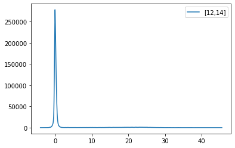
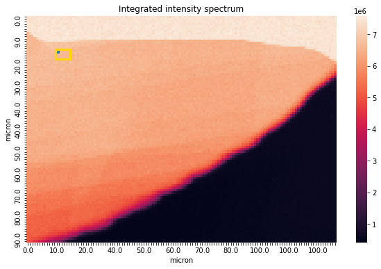
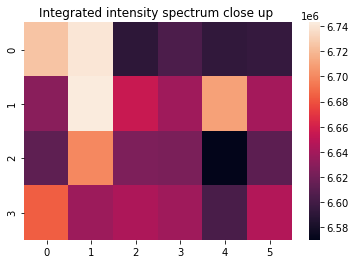
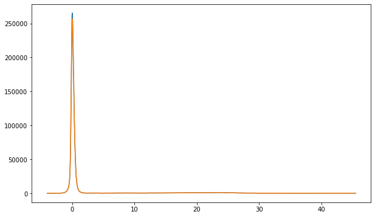
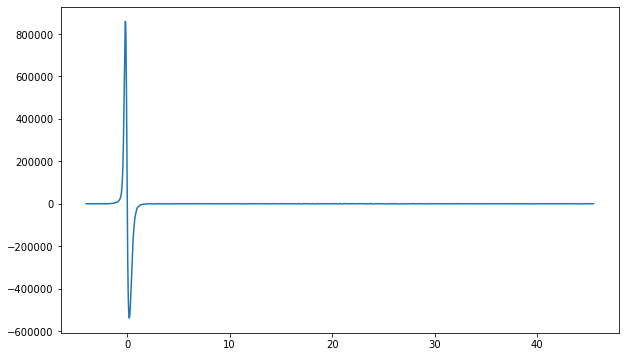
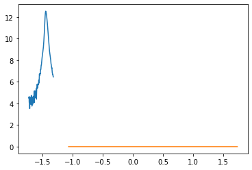
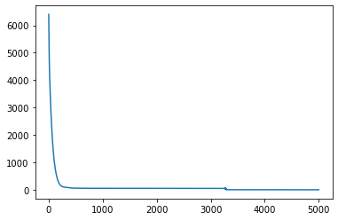
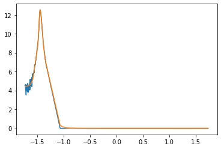

Zero-Loss Peak Subtraction with Neural Networks¶

Loading the data¶
First of all, let us install and import all the required modules
[1]:
!pip install ncempy
#!wget https://github.com/LHCfitNikhef/CBL-ML/raw/tutorial/Tutorial/area03-eels-SI-aligned.dm4
#!wget https://raw.githubusercontent.com/LHCfitNikhef/CBL-ML/tutorial/Tutorial/imageClass.py
#!wget https://raw.githubusercontent.com/LHCfitNikhef/CBL-ML/tutorial/Tutorial/trainZLP.py
Requirement already satisfied: ncempy in /Users/jaco/opt/anaconda3/envs/py37/lib/python3.7/site-packages (1.8.0)
Requirement already satisfied: scipy in /Users/jaco/opt/anaconda3/envs/py37/lib/python3.7/site-packages (from ncempy) (1.5.2)
Requirement already satisfied: matplotlib in /Users/jaco/opt/anaconda3/envs/py37/lib/python3.7/site-packages (from ncempy) (3.3.2)
Requirement already satisfied: numpy in /Users/jaco/opt/anaconda3/envs/py37/lib/python3.7/site-packages (from ncempy) (1.19.2)
Requirement already satisfied: h5py>=2.9.0 in /Users/jaco/opt/anaconda3/envs/py37/lib/python3.7/site-packages (from ncempy) (2.10.0)
Requirement already satisfied: kiwisolver>=1.0.1 in /Users/jaco/opt/anaconda3/envs/py37/lib/python3.7/site-packages (from matplotlib->ncempy) (1.3.0)
Requirement already satisfied: pillow>=6.2.0 in /Users/jaco/opt/anaconda3/envs/py37/lib/python3.7/site-packages (from matplotlib->ncempy) (8.0.1)
Requirement already satisfied: python-dateutil>=2.1 in /Users/jaco/opt/anaconda3/envs/py37/lib/python3.7/site-packages (from matplotlib->ncempy) (2.8.1)
Requirement already satisfied: cycler>=0.10 in /Users/jaco/opt/anaconda3/envs/py37/lib/python3.7/site-packages (from matplotlib->ncempy) (0.10.0)
Requirement already satisfied: pyparsing!=2.0.4,!=2.1.2,!=2.1.6,>=2.0.3 in /Users/jaco/opt/anaconda3/envs/py37/lib/python3.7/site-packages (from matplotlib->ncempy) (2.4.7)
Requirement already satisfied: certifi>=2020.06.20 in /Users/jaco/opt/anaconda3/envs/py37/lib/python3.7/site-packages (from matplotlib->ncempy) (2020.12.5)
Requirement already satisfied: six in /Users/jaco/opt/anaconda3/envs/py37/lib/python3.7/site-packages (from h5py>=2.9.0->ncempy) (1.15.0)
[2]:
from ncempy.io import dm
import numpy as np
import matplotlib.pyplot as plt
import seaborn as sns
from sklearn.model_selection import train_test_split
import imageClass as EELSImage
import trainZLP as ZLPnn
In this tutorial, we will study a model independent way of subtracting the ZLP from an EELS spectrum.
The spectral image can be imported with the lines below
[3]:
path_to_dm4 = 'area03-eels-SI-aligned.dm4'
im = EELSImage.Spectral_image.load_data(path_to_dm4)
Plotting the data¶
[4]:
full_width, full_height = im.image_shape[1], im.image_shape[0]
loc_x, loc_y = int(0.1 * full_width), int(0.15 * full_height)
spectrum = im.plot_spectrum(loc_y, loc_x)
xmin, width = int(0.1 * full_width), int(0.05 * full_width)
ymin, height = int(0.15 * full_height), int(0.05 * full_height)
window = np.array([[xmin, width], [ymin, height]])
im.show_image(selection = window, pixel_highlight = [loc_x, loc_y])



Smoothing¶
[5]:
data_zoomed_concat = np.reshape(im.data_zoomed, (-1, im.l))
data_smooth = ZLPnn.smooth(data_zoomed_concat, window_len = 10)
plt.figure(figsize=(10,6))
plt.plot(im.deltaE, im.data_zoomed[-1, -2, :])
plt.plot(im.deltaE, data_smooth[-2,:])
plt.show()

[6]:
def der_spect(image, spectrum):
dx = image.ddeltaE
der_spectrum = (spectrum[:,1:]-spectrum[:,:-1])/dx
return der_spectrum
der = der_spect(im, data_smooth)
der_smooth = ZLPnn.smooth(der, window_len = 10)
plt.figure(figsize=(10,6))
plt.plot(im.deltaE[:-1], der_smooth[-1,:])
plt.show()

Finding \(dE_1\) and \(dE_2\)¶
[7]:
data_avg = np.average(data_smooth, axis=0)
der_avg = np.average(der, axis=0)
dE1 = ZLPnn.find_dE1(im, der_avg, data_avg, fct=0.7)
times_dE1 = 3
min_dE2 = im.deltaE.max() - im.ddeltaE*im.l*0.05 # discuss with Isabel
dE2 = np.minimum(dE1 * times_dE1, min_dE2)
[8]:
select1 = len(im.deltaE[im.deltaE < dE1])
select2 = len(im.deltaE[im.deltaE > dE2])
Preparing the training data¶
[9]:
epsilon = 1e-3
data_zoomed_concat[data_zoomed_concat < 0] = epsilon
def rescale(data, mean, std):
return (data - mean) / std
deltaE_scaled = rescale(im.deltaE, np.mean(im.deltaE), np.std(im.deltaE))
pseudo_x = np.ones(select1 + select2)
pseudo_x[:select1] = deltaE_scaled[:select1]
pseudo_x[-select2:] = deltaE_scaled[-select2:]
data_y = np.log(data_zoomed_concat[0][:select1])
data_y = np.append(data_y, np.zeros(select2))
ci_low = np.nanpercentile(np.log(data_zoomed_concat), 16, axis=0)
ci_high = np.nanpercentile(np.log(data_zoomed_concat), 84, axis=0)
sigma = np.absolute(ci_high - ci_low)
data_sigma = sigma[:select1]
data_sigma = np.append(data_sigma, 0.8 * np.ones(select2))
[10]:
plt.plot(pseudo_x[:select1], data_y[:select1])
plt.plot(pseudo_x[-select2:], data_y[-select2:])
[10]:
[<matplotlib.lines.Line2D at 0x7f88c8a47f10>]

[11]:
# add this to the modules
ci_low = np.nanpercentile(np.log(data_zoomed_concat), 16, axis=0)
ci_high = np.nanpercentile(np.log(data_zoomed_concat), 84, axis=0)
sigma = np.absolute(ci_high - ci_low)
Discuss with Isabel: rescale before or after applying dE cuts?
Constructing the Neural Network¶
[12]:
import torch
import torch.nn as nn
import torch.optim as optim
import datetime
class MLP(nn.Module):
def __init__(self, num_inputs, num_outputs):
super().__init__()
self.linear1 = nn.Linear(num_inputs, 10)
self.linear2 = nn.Linear(10, 15)
self.linear3 = nn.Linear(15, 5)
self.output = nn.Linear(5, num_outputs)
self.tanh = nn.Tanh()
#self.relu = nn.ReLU()
def forward(self, x):
x = self.linear1(x)
x = self.tanh(x)
x = self.linear2(x)
x = self.tanh(x)
x = self.linear3(x)
x = self.tanh(x)
x = self.output(x)
return x
def loss_fn(output, target, error):
loss = torch.mean(torch.square((output - target)/error))
return loss
# def weight_reset(m):
# if isinstance(m, nn.Linear):
# m.reset_parameters()
def weights_init(model):
for layer in model.children():
if hasattr(layer, 'reset_parameters'):
layer.reset_parameters()
def training_loop(n_rep, n_epochs, optimizer, model, loss_fn):
#data_x = deltaE_scaled[:select1]
#data_sigma = im.data_unc[:select1]
for rep in range(n_rep):
#model.apply(weights_init)
data_y = np.log(data_zoomed_concat[rep][:select1])
data_y = np.append(data_y, np.zeros(select2))
#data_y = np.log(data_zoomed_concat[rep][:select1])
train_x, test_x, train_y, test_y, train_sigma, test_sigma = train_test_split(pseudo_x, data_y, data_sigma, test_size=0.5)
train_x = torch.tensor(train_x).unsqueeze(-1)
test_x = torch.tensor(test_x).unsqueeze(-1)
train_y = torch.tensor(train_y).unsqueeze(-1)
test_y = torch.tensor(test_y).unsqueeze(-1)
train_sigma = torch.tensor(train_sigma).unsqueeze(-1)
test_sigma = torch.tensor(test_sigma).unsqueeze(-1)
validation_loss = []
training_loss = []
loss_val_old = 0
overfit_counter = 0
patience = 10000
for epoch in range(1, n_epochs + 1):
loss_train = 0.0
loss_val = 0.0
model_output = model(train_x.float())
loss = loss_fn(model_output, train_y, train_sigma)
optimizer.zero_grad()
loss.backward()
optimizer.step()
loss_train += loss.item()
training_loss.append(loss_train)
#validation loss
with torch.no_grad():
model_output = model(test_x.float())
val_loss = loss_fn(model_output, test_y, test_sigma)
loss_val += val_loss.item()
validation_loss.append(loss_val)
assert val_loss.requires_grad == False
# model.eval()
# with torch.no_grad():
# loss_val = 0.0
# model_output = model(test_x.float())
# loss = loss_fn(model_output, test_y, test_sigma)
# #assert loss_val.requires_grad is False
# loss_val += loss.item()
# validation_loss.append(loss_val)
# if loss_val > loss_val_old and epoch > 1:
# overfit_counter += 1
# if overfit_counter == patience:
# torch.save(model.state_dict(), './models/trained_nn_rep_{}.pt'.format(rep))
# print(loss_train, epoch)
# break
# loss_val_old = loss_val
if epoch == 1 or epoch % 500 == 0:
print('{} Replica {}, Epoch {}, Training loss {}, Validation loss {}'.format(datetime.datetime.now(), rep, epoch, loss_train, loss_val))
#print(validation_loss)
torch.save(model.state_dict(), './models/trained_nn_rep_{}.pt'.format(rep))
plt.plot(training_loss)
n_rep = im.data_zoomed.shape[0] * im.data_zoomed.shape[1]
n_epochs = 5000
model = MLP(num_inputs=1, num_outputs=1)
optimizer = optim.Adam(model.parameters(), lr=1e-2)
training_loop(
n_rep = 1,
n_epochs = n_epochs,
optimizer = optimizer,
model = model,
loss_fn = loss_fn
)
2021-06-02 10:25:06.080418 Replica 0, Epoch 1, Training loss 6397.148489023718, Validation loss 11225.951041834369
2021-06-02 10:25:06.857805 Replica 0, Epoch 500, Training loss 58.41700803067127, Validation loss 101.51453377462462
2021-06-02 10:25:07.581313 Replica 0, Epoch 1000, Training loss 52.99262968733756, Validation loss 89.58826879685203
2021-06-02 10:25:08.286325 Replica 0, Epoch 1500, Training loss 52.68930857824417, Validation loss 89.0323407608156
2021-06-02 10:25:08.998116 Replica 0, Epoch 2000, Training loss 52.44953566470122, Validation loss 88.6381313829072
2021-06-02 10:25:09.794270 Replica 0, Epoch 2500, Training loss 52.256512461781284, Validation loss 88.2900548166441
2021-06-02 10:25:10.603543 Replica 0, Epoch 3000, Training loss 52.09884260056629, Validation loss 87.99711944174626
2021-06-02 10:25:11.375789 Replica 0, Epoch 3500, Training loss 2.7443762396734335, Validation loss 4.233318961041119
2021-06-02 10:25:12.122397 Replica 0, Epoch 4000, Training loss 2.0379246297734577, Validation loss 2.905606214974817
2021-06-02 10:25:12.828285 Replica 0, Epoch 4500, Training loss 0.3047092044467526, Validation loss 0.5504977132547548
2021-06-02 10:25:13.530739 Replica 0, Epoch 5000, Training loss 0.2058238542845904, Validation loss 0.35462617964489057

Play with different optimizers/architectures/learning rates
[13]:
network_path = './models/trained_nn_rep_0.pt'
model.load_state_dict(torch.load(network_path))
#data_x = deltaE_scaled[:select1]
pseudo_x = torch.tensor(pseudo_x).unsqueeze(-1)
model_pred = model.forward(pseudo_x.float())
model_pred = model_pred.detach().numpy()
plt.plot(pseudo_x, data_y)
plt.plot(pseudo_x, model_pred)
#plt.plot(deltaE_scaled[:select1], np.log(im.data_zoomed_concat[0][:select1]))
plt.show()

[ ]:
Training report¶
Plot of loss validation set adding dE2
Evaluating the trained models¶
[14]:
pred = []
for rep in range(0,n_rep):
network_path = './models/trained_nn_rep_{}.pt'.format(rep)
model.load_state_dict(torch.load(network_path))
model_pred = model.forward(data_x.float())
model_pred = model_pred.detach().numpy()
pred.append(model_pred[:,0])
pred = np.array(pred)
pred_median = np.median(pred, axis=0)
cl_low = np.nanpercentile(pred, 16, axis=0)
cl_high = np.nanpercentile(pred, 84, axis=0)
plt.figure(figsize=(10, 6))
ax = plt.subplot(111)
plt.plot(deltaE_scaled[:select1], pred_median)
ax.fill_between(deltaE_scaled[:select1], cl_low, cl_high, alpha = 0.3)
plt.show()
---------------------------------------------------------------------------
NameError Traceback (most recent call last)
<ipython-input-14-7896f1afc797> in <module>
5 model.load_state_dict(torch.load(network_path))
6
----> 7 model_pred = model.forward(data_x.float())
8 model_pred = model_pred.detach().numpy()
9 pred.append(model_pred[:,0])
NameError: name 'data_x' is not defined
Discuss with Isabel: pretrained models
ZLP subtraction¶
[ ]:
plt.figure(figsize=(10,6))
plt.plot(im.deltaE, data_zoomed_concat[-2], linestyle='dashed', label='original', color='k')
plt.fill_between(im.deltaE[:select1], np.exp(cl_low), np.exp(cl_high), alpha = 0.4, label='ZLP', color='C1')
plt.plot(im.deltaE[:select1], np.exp(pred_median), linestyle = 'dashed', color='C1')
plt.plot(im.deltaE[:select1], data_zoomed_concat[0][:select1]-np.exp(pred_median), linestyle='dashed')
plt.fill_between(im.deltaE[:select1], data_zoomed_concat[0][:select1] - np.exp(cl_low), data_zoomed_concat[0][:select1] - np.exp(cl_high), alpha = 0.4, label='subtracted', color='C0')
plt.xlim(-1.2, 4.5)
plt.legend()
plt.show()
Bandgap fit¶
[ ]: